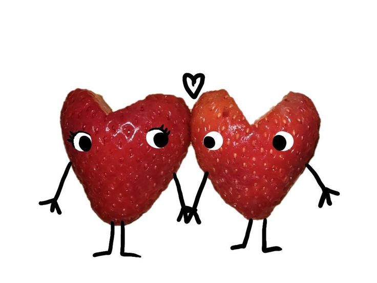

Welcome, This is a small collection of poems and excerpts about love: how it begins, how it lingers, and how it changes. May you find pieces that speak to your heart.

The love you without knowing how, or when, or from where. I love you simply, without problems or pride:
I love you in this way because I do not know any other way of loving but this, in which there is no I or you, so intimate that your hand upon my chest is my hand, so intimate that when I fall asleep your eyes close.” - Pablo Neruda
Things to do while resting: